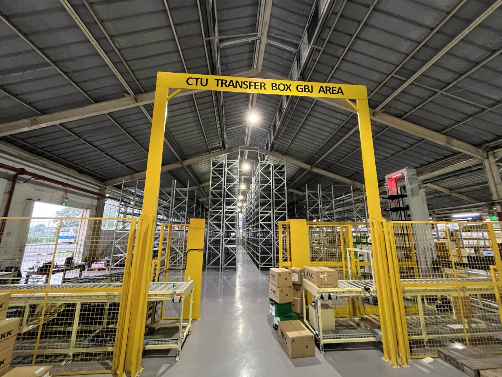
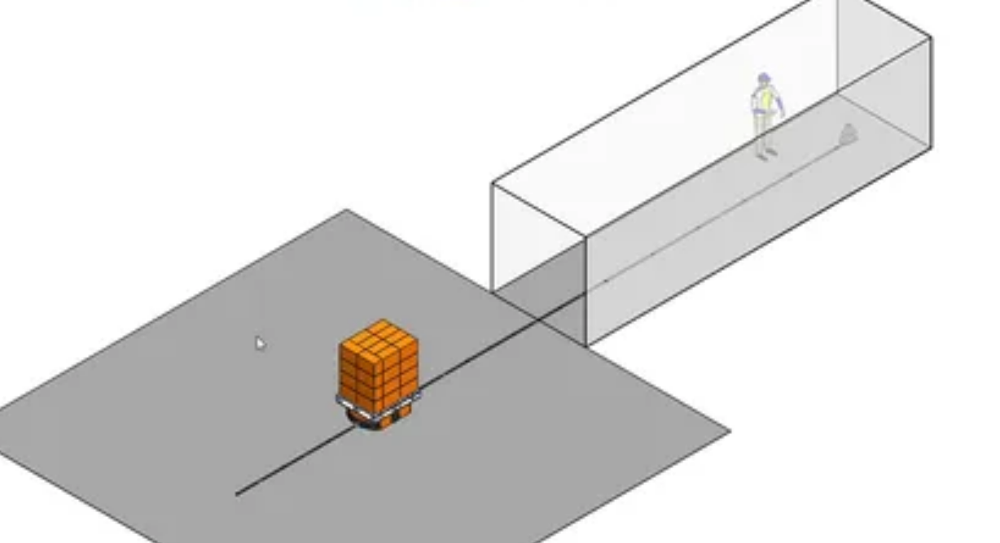
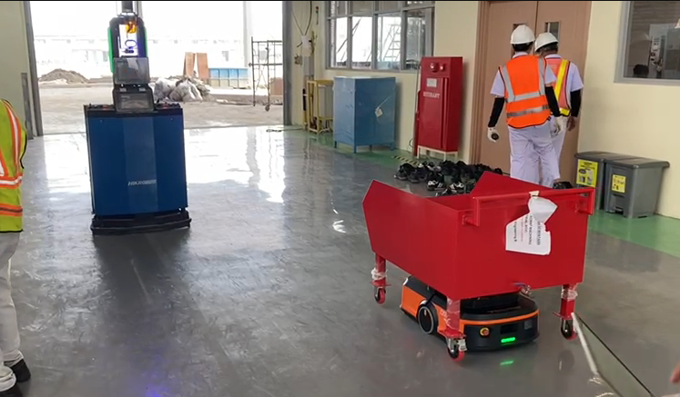
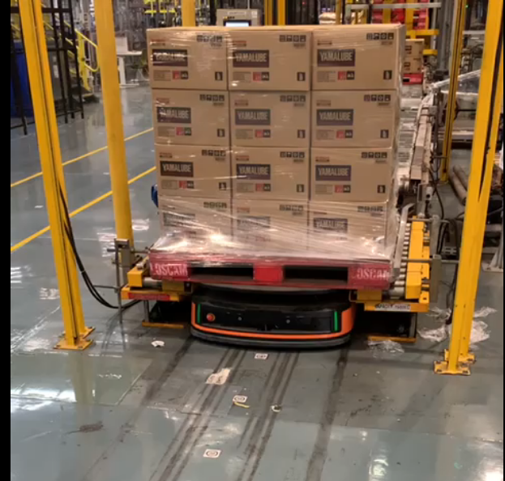
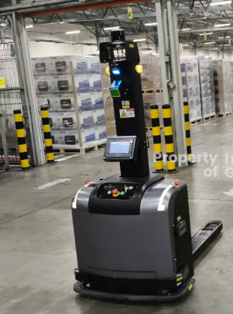

01
Mobile Robotics
HIKROBOT · CASUN · LINDIN · SEER
COMMISSIONING ENGINEER · MOBILE ROBOTICS
Mechatronics Engineer with 4+ years of hands-on experience preparing, integrating, commissioning and implementing AMR, FMR and warehouse automation systems.

01 / PROFILE
I work across the boundary between robotic hardware, control systems, software and real-world operations. My focus is not only making a robot move, but making the complete system work reliably inside the customer's process.
Preparation & integration
Site commissioning & validation
Troubleshooting & optimization
FAT, SAT & handover
02 / TECHNICAL STACK
Robotics platforms, navigation, PLC, middleware and communication protocols — combined to deliver an integrated automation system.
HIKROBOT · CASUN · LINDIN · SEER
QR Navigation · QR Matrix · 2D / 3D SLAM
Mitsubishi · OMRON · PUSR
RCS · PLC · Node-RED · WMS / Third Party
C# · Python · Visual Studio
MQTT · Modbus · REST API · JSON · FINS · MC Protocol
03 / CAREER
PT. Artifa Sukses Persada (Infinitigroup)
Pre-delivery quality inspection, FAT coordination, issue documentation, defect follow-up and hands-on troubleshooting before deployment.
PT. Artifa Sukses Persada (Infinitigroup)
Technical concept development, requirements analysis, electrical diagrams, communication architecture, integration planning, robot programming and vendor coordination.
PT. Artifa Sukses Persada (Infinitigroup)
Field deployment and commissioning of robotics and automation systems, from installation and configuration through testing, validation and customer handover.
04 / SELECTED PROJECTS
Selected project experience from warehouse automation, multi-robot integration and automated material handling.
HIKROBOT CTU
CTU warehouse automation — site layouts, automation flows, operational tuning, material-flow troubleshooting and a custom safety gate for operator-access areas.

PROJECT 02 · 2024HIKROBOT AMR
AMR warehouse automation with fleet-based layout planning, RCS integration support and specialized QR navigation for container boxes.

PROJECT 03 · 2023HIKROBOT AMR & FMR
Multi-robot integration using 2D SLAM for AMR and 3D SLAM for FMR in shared operational zones.

PROJECT 04 · 2022HIKROBOT AMR & FMR
Wide-area QR navigation, AMR/FMR coexistence, inspection application development and conveyor integration.

PROJECT 05 · 2024SEER FMR
Automated warehouse delivery with network infrastructure, SLAM navigation, process-flow configuration and on-site tuning.
05 / DELIVERY PROCESS
A practical commissioning workflow focused on validation, safety and operational reliability.
Pre-delivery quality inspection, test preparation and defect follow-up.
Installation, configuration, functional testing and operational tuning.
Interlocking, operator-access areas and controlled robot movement.
Customer validation against project scope and requirements.
Operator guidance, documentation and final handover.
06 / EDUCATION
Bachelor of Applied Science · Aug 2016 — Jan 2022 · GPA 3.29 / 4.00
Control Systems · Feedback Control · Mechatronics · Robotics Fundamentals · Electric Motors & Actuators · Sensors & Instrumentation
07 / CONTACT
Available for commissioning, system integration, automation and mobile robotics opportunities.